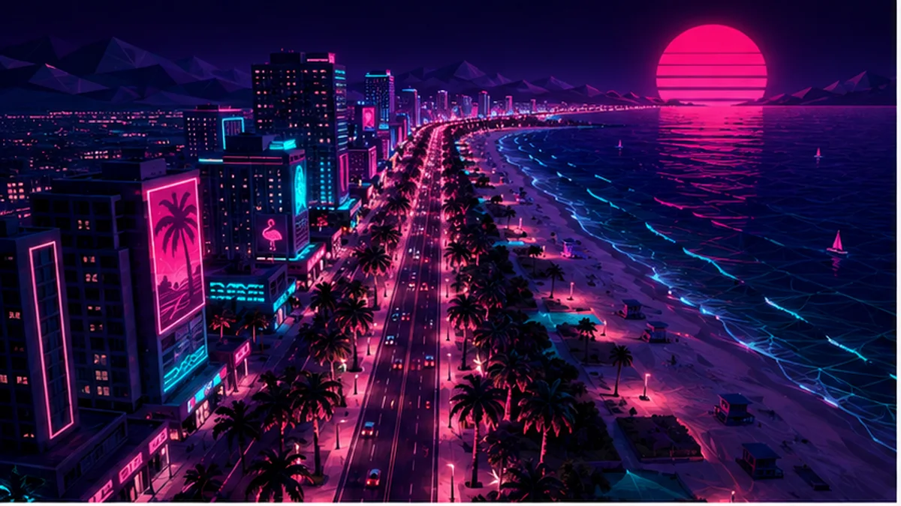

गाइड से पहले की गाइड
GTA VI 19 नवंबर 2026 को आएगा – असली वॉकथ्रू अभी मुमकिन नहीं। लेकिन GTA आख़िर GTA है: फ़ॉर्मूला सालों से तय है। हम हमेशा की तरह लेबल करते हैं – GTA VI के लिए क्या आधिकारिक है, क्या सीरीज़ परंपरा है और क्या सिर्फ़ अपेक्षित। लॉन्च के बाद यही पेज पूरी गाइड बनेगा।


GTA कैसे काम करता है सीरीज़ परंपरा
ओपन वर्ल्ड
छोटे से इंट्रो के बाद (लगभग) पूरा नक़्शा खुल जाता है। स्टोरी मिशन कहानी आगे बढ़ाते हैं, बीच में आप खुलकर घूमिए, साइड-एक्टिविटी कीजिए या बस हंगामा। कहानी भागती नहीं – वह इंतज़ार करती है।
दो मुख्य किरदार आधिकारिक
आप Jason और Lucia दोनों को खेलेंगे। स्विचिंग कैसे होगी, यह दिखाया नहीं गया – GTA V में लगभग कभी भी किरदार बदल सकते थे, यहाँ भी वैसा ही माना जा रहा है। अपेक्षित
पैसा ही Vice City चलाता है
मिशन, काम और टेढ़े धंधे पैसे लाते हैं; ख़र्च होता है हथियारों, गाड़ियों, कपड़ों और प्रॉपर्टी पर। पुराना नियम: शुरुआत में सब मत उड़ाइए – महँगे खिलौने बाद में ख़ुद आएँगे।
हर चीज़ एक औज़ार है
कारें, नावें, बाइकें, विमान, हथियार, घूँसे: GTA सिस्टम देता है, पटरियाँ नहीं। कई मिशनों के एक से ज़्यादा हल हैं – रचनात्मकता की सज़ा कम ही मिलती है।

वॉन्टेड सिस्टम: जब पुलिस पीछे पड़े सीरीज़ परंपरा
हाँ, Leonida में भी पुलिस आपका पीछा करेगी – वॉन्टेड स्टार GTA का उतना ही हिस्सा हैं जितने Vice City के ताड़ के पेड़। स्क्रीनशॉट्स में Port Gellhorn की पुलिस गाड़ियाँ दिख चुकी हैं। क्लासिक सिस्टम ऐसे चलता है:
★ स्टार लेवल
जितने ज़्यादा स्टार, उतना सख़्त जवाब: अकेली गश्ती गाड़ियों से लेकर नाकेबंदी, हेलिकॉप्टर और स्पेशल यूनिट तक। छोटे-मोटे अपराध पर 1–2 स्टार, पुलिस पर गोली चलाने पर कहीं ज़्यादा।
पीछा छुड़ाना
क्लासिक तरीक़ा: पीछा करने वालों की नज़र से ओझल होकर तलाशी ख़त्म होने तक शांत रहिए। आज़माए हुए नुस्ख़े: गाड़ी बदलिए या नया पेंट कराइए, गलियों-सुरंगों में घुसिए, ज़रूरत पड़े तो पानी में। Keys और Grassrivers का इलाक़ा यहाँ मदद करेगा।
Busted या Wasted
पकड़े गए या गिर गए तो थाने या अस्पताल में दोबारा शुरुआत – फ़ीस देकर, और साथ रखे हथियार अक्सर ज़ब्त। महँगा सौदा, पर दुनिया ख़त्म नहीं होती।
ज़्यादा चालाक पुलिस? अपेक्षित
लीक और Take-Two के पेटेंट काफ़ी बेहतर NPC व पुलिस AI की ओर इशारा करते हैं – असली जैसी प्रतिक्रियाएँ, चतुर पीछा। आधिकारिक पुष्टि किसी की नहीं।

10 टिप्स जो हर GTA में काम आते हैं सीरीज़ परंपरा
- पहले देखिए, फिर चलाइए। पहले कुछ घंटे सीखने के लिए हैं: कंट्रोल, नक़्शा, ड्राइविंग।
- ख़ूब चलाइए, जल्दी उड़िए। रास्तों की पहचान हर पीछा जिताती है – शॉर्टकट पुलिस छुड़ाते हैं।
- हर मिशन तुरंत नहीं। घूमने का इनाम मिलता है: साइड-एक्टिविटी से पैसा, गियर और अक्सर बेहतर कहानियाँ।
- पैसा जोड़िए, उड़ाइए मत। पहली प्रॉपर्टी आने पर शुरुआती लग्ज़री कार का अफ़सोस होगा।
- कवर ही ज़िंदगी है। GTA रैम्बो-सिम्युलेटर नहीं – कवर लीजिए, दुश्मनों को एक-एक कर निकालिए।
- एम-असिस्ट में शर्म कैसी। कंसोल पर असिस्टेड एमिंग सामान्य है; फ़्री एम बाद में भी चालू हो सकता है।
- सेव, सेव, सेव। जोखिम से पहले मैनुअल सेव – ढेर सारी झुंझलाहट बचेगी।
- टैक्सी और फ़ास्ट ट्रैवल। हों तो इस्तेमाल कीजिए: Leonida में भी समय पैसा है।
- दुनिया को सुनिए। रेडियो, राहगीरों की बातें और न्यूज़ में साइड-कंटेंट के सुराग़ छिपे होते हैं।
- अपनी रफ़्तार। GTA की दुनिया सैकड़ों घंटों के लिए बनी है। सिर्फ़ स्टोरी भागने में आधा गेम छूट जाता है।
कठिनाई: GTA VI कितना मुश्किल होगा?
सीरीज़ परंपरा GTA में पारंपरिक रूप से चुनने लायक़ डिफ़िकल्टी नहीं होती। चुनौती इन बटनों से नियंत्रित होती है, जिन्हें आप ख़ुद घुमा सकते हैं:
- एम-असिस्ट: पूरे असिस्ट से फ़्री एम तक – महसूस होने वाली कठिनाई का सबसे बड़ा लीवर।
- चेकपॉइंट: असफल मिशन आख़िरी हिस्से से दोबारा शुरू होते हैं, शून्य से नहीं।
- मिशन स्किप: GTA V से, कई असफलताओं के बाद हिस्सा छोड़ा जा सकता है – अटकने पर वरदान।
- अपनी तैयारी: बेहतर कवच, हथियार और गाड़ियाँ हर मिशन आसान बनाते हैं।
GTA VI में और विकल्प (जैसे आधुनिक Rockstar गेम्स की एक्सेसिबिलिटी सेटिंग्स) आएँगे या नहीं, अभी खुला है। अज्ञात
काउंटडाउन चेकलिस्ट: 19 नवंबर के लिए तैयार आधिकारिक
- स्टोरेज ख़ाली कीजिए: डाउनलोड साइज़ अभी अज्ञात है – इतने बड़े गेम के लिए खुलकर जगह रखिए।
- 12 नवंबर को प्रीलोड: डिजिटल ख़रीदार हफ़्ता पहले डाउनलोड करते हैं – आधी रात खेलना है तो 19 का इंतज़ार मत कीजिए।
- एडिशन चुनिए: लॉन्च पर Standard काफ़ी है; Ultimate अपग्रेड बाद में भी होगा। विवरण एडिशन कम्पैरिज़न में।
- अकाउंट और पेमेंट जाँचिए: PSN/Xbox अकाउंट अपडेट, पेमेंट तरीक़ा जुड़ा हुआ – छोटी बात, लॉन्च-नाइट की खीज बचाती है।
- स्पॉइलर-दीवार खड़ी कीजिए: 27 अगस्त के Extended Look और लॉन्च के आसपास लीक सोशल मीडिया पर छा जाएँगे। कीवर्ड म्यूट कीजिए।
- "अर्ली एक्सेस" से दूर रहिए: न पहले खेलने का कोई तरीक़ा है, न PC डाउनलोड। ऐसा वादा करने वाली हर चीज़ धोखा है।
 TVFussball.de
TVFussball.de
 TVKinderprogramm.de
TVKinderprogramm.de
 Mühle Meister
Mühle Meister